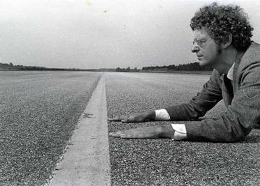
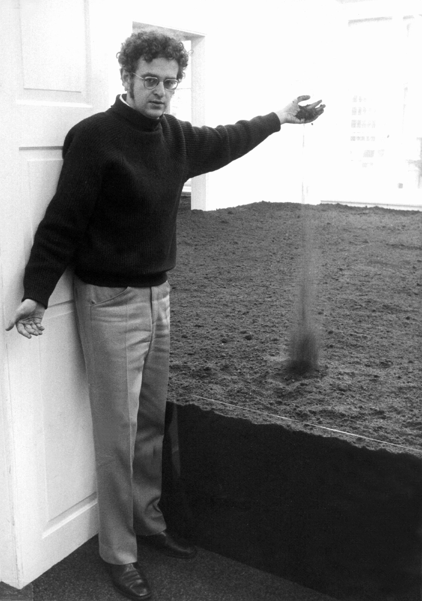

Artist Photos
These photos display an array of situations one could find De Maria in, as he was constantly trying new things and new locations to work on his art. This brought him to areas like the desert, where the large open spaces inspired him.

